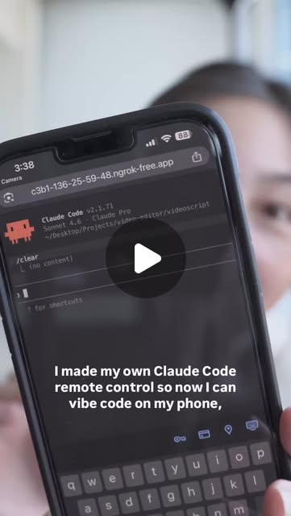

Beyond Prompting: Prompt Architecture as Engineering Discipline
Try It — Action Sketch
1. Stop optimizing prompts in isolation — map the full context flow 2. Implement RAG with hybrid search + reranking for internal docs 3. Build a memory layer: what the model needs to remember across sessions 4. Add retrieval-augmented generation for domain-specific knowledge 5. Design self-correction: let the model audit its own output 6. Measure: track which context components actually improve output quality
Connected Posts (13)



Prompt system — run this yourself
Pasteable into Claude Code, Claude, or any agent. One-shot for the whole result, step prompts when you want to steer. Every step carries its own audit; the gap audit makes the agent find and fill what it missed.
Mission. Turn a working LLM feature from prompt-tinkering into measured prompt architecture: an eval set over real tasks, a context pipeline (what enters the window and from where), a persisted memory layer, retrieval where it earns its place, and a self-correction loop - each component kept only if it moves the eval. Done means a held-out eval shows the architected system beats the single-prompt baseline on a stated metric, and every component's contribution is measured, not assumed.
1 · Deeper, not bigger
- What a top professional would do (that you didn't ask for): A practitioner past prompt engineering, as lindavivah/Richmond Alake frame it, does not keep editing one prompt. They instrument the system the way angus.sewell describes instrumenting a product: define an eval set over real tasks with pass/fail criteria, then treat context, memory, retrieval and self-correction as separable components each measured against that eval. They add a context-sufficiency check (the agent asks for missing context before acting, per angus.sewell's PM loop), they prefer structured storage over vector memory for factual business context (angus.sewell: 'most memory should be structured'), and they ablate: remove a component, re-run the eval, keep it only if removal hurts. They watch outputs like a product (the PostHog-as-observability idea) but keep fix decisions human.
- Rawest material to start from: Your own task logs and failure cases (the real distribution the feature serves); the Anthropic/your-provider API docs for the model in use; your internal docs/knowledge base if retrieval is in play; angus.sewell's context-sufficiency and project-management loop pattern; the structured-warehouse-as-memory argument; a held-out set of 30-50 representative tasks with explicit pass/fail criteria that you, not the model, author.
- Methods and tools: An eval harness (even a simple Python runner) scoring N held-out tasks with explicit criteria; a context pipeline with a sufficiency gate (agent must flag missing context before acting); a structured memory store (SQLite/Postgres or markdown files) over vector DB for factual recall, adding embeddings only where semantic search is needed; hybrid retrieval + reranking only if the eval shows retrieval helps; a generator-evaluator self-correction loop; ablation runs; optional agent-output logging (PostHog-style) with humans deciding fixes.
- What proves it right: A held-out eval (tasks the system was not tuned on) where the architected system beats the single-prompt baseline on a stated metric (pass rate, groundedness, or cost per correct answer). An ablation table proving each retained component moves the metric. A noise check: variance between two identical runs is smaller than the gap between best and worst architecture, or the eval is too noisy to trust.
Rewritten prompt — ask for exactly that:
Act as an LLM systems engineer, not a prompt tuner. For my feature <describe it>, stop optimising the prompt and architect the system, proving every piece. First, from my real task logs at <path>, build a held-out eval of 30-50 tasks with explicit pass/fail criteria I can inspect - this is the oracle. Establish the single-prompt baseline score. Then add components one at a time, re-running the eval after each: (1) a context pipeline with a sufficiency gate that makes the agent flag missing context before acting; (2) a persisted memory layer - structured storage (SQLite/markdown), not a vector DB, unless the eval shows semantic recall is needed; (3) retrieval with reranking only if it improves the eval; (4) a generator-evaluator self-correction loop. After each addition, ablate it: remove it, re-run, keep only if removal drops the score. Run a noise check: compare variance of two identical runs to the best-vs-worst architecture gap; if noise dominates, tell me the eval is untrustworthy. Return the eval set, the baseline and per-component scores, the ablation table, the noise check, and which components earned their place.
2 · One-shot prompt
You are an LLM systems engineer. Your job is to replace prompt-tinkering with measured prompt architecture for one real feature. Stance: nothing is kept unless an eval says it earns its place; you instrument, you do not vibe. No marketing language. Context and method: the shift lindavivah/Richmond Alake name is from editing a prompt to building context (signal/noise in the window), memory (persist/retrieve/forget across sessions) and the surrounding harness. angus.sewell's rules apply: make the agent check it has sufficient context before acting; prefer STRUCTURED storage over vector memory for factual recall; log outputs like a product but keep fix decisions human. The eval is the oracle; without it, every change is a guess. Hard constraints: author a held-out eval of 30-50 real tasks with explicit pass/fail criteria BEFORE touching architecture; establish a single-prompt baseline; add components one at a time and re-run the eval; ablate every component; run a noise check. Name the real model, real data paths, real stores. Do not add a component the eval cannot measure. Do not claim an improvement without a held-out number. Ordered deliverables: (1) the held-out eval set (30-50 tasks, each with input and an explicit pass/fail criterion I can read). (2) the single-prompt baseline score. (3) a context pipeline with a sufficiency gate (agent flags missing context before acting) + its eval delta. (4) a persisted memory layer - structured first, vector only if justified - + its eval delta. (5) retrieval with reranking IF and only if it improves the eval, with the delta. (6) a generator-evaluator self-correction loop + its eval delta. (7) an ablation table (component, score with/without, keep/cut) and a noise check (variance of two identical runs vs best-worst gap). Built-in gap analysis: before finishing, list what is unverified - is the eval representative of real traffic; are pass/fail criteria objective; did I tune on the held-out set by accident; is any delta within noise. Fill what you can. Self-questions to answer in writing: Did I author the eval criteria, or let the model grade itself freely? Is the held-out set actually held out, or did I tune on it? Is any component's gain inside the noise band? Did I reach for a vector DB where structured storage would have been better and cheaper? Does the sufficiency gate actually fire on under-specified tasks? Is the generator-evaluator loop improving answers or just adding cost? What is my cost per correct answer, not just pass rate? Stop conditions: stop and ask only if there are no task logs to build an eval from. Otherwise proceed end to end. Return format: a markdown report with the eval description, a scores table (baseline + each component + full system), the ablation table, the noise check, cost-per-correct-answer, and an 'Unverified and missing' section. Commit the eval set, the runner, and the component code; print the commit hash. One more discipline: report cost and latency alongside every eval score, not pass rate alone. A component that lifts the pass rate but triples tokens or doubles latency is a trade-off the reader must see stated explicitly, so each row of your scores table carries pass rate, cost per correct answer, and median latency. And when you grade with a model rather than a human, spot-check at least five of its judgements by hand per run, because an LLM grader that drifts quietly turns your whole oracle into noise and every downstream decision inherits that error.
3 · Step-by-step prompts
Step 1 — Build the eval (the oracle)
Goal: Author a held-out eval of real tasks before any architecture.
Establish ground truth: the eval. From my real task logs (at the path I give you), sample 30-50 representative tasks covering the real distribution, including the failure cases. For each, write the input and an EXPLICIT, objective pass/fail criterion a human could apply (not 'is it good' - e.g. 'answer cites the correct policy section', 'returns valid JSON with fields x,y,z', 'refuses when the record is missing'). Split: none of these will be used to tune prompts (held-out). Build a tiny runner that executes the current single-prompt system against all tasks and scores pass/fail. This eval is the oracle every later step is judged against; architecture changes that do not move it do not ship.
Expect: A committed eval set of 30-50 tasks, each with input and an objective pass/fail criterion, plus a runner that scores a system against it.
Audit before moving on: Hand 5 tasks' criteria to yourself and confirm two people would grade them identically (objective). Confirm the sample includes real failure cases, not just easy ones. Fail if criteria are subjective or the set is cherry-picked easy tasks. On fail, rewrite the criteria and resample.
Step 2 — Baseline + noise floor
Goal: Score the single prompt and measure how noisy the eval is.
Establish the baseline and the noise floor. (1) Run the current single-prompt system against the full eval and record the score - this is the number everything must beat. (2) Run the SAME system against the eval twice more (identical config) and record the variance between the three runs. This is your noise floor: any later improvement smaller than this variance is noise, not signal. Report both the baseline score and the run-to-run variance. If the variance is large (e.g. comparable to the gaps you expect from architecture), flag that the eval is too noisy and must be enlarged or criteria tightened before trusting any result.
Expect: A baseline eval score and a measured run-to-run variance (noise floor), with a flag if noise is too high to trust.
Audit before moving on: Confirm the three runs used identical config (only sampling randomness differs). Fail if variance is high and you proceed anyway. On fail, enlarge the eval or tighten criteria until noise is below the improvement you need to detect.
Step 3 — Context pipeline + sufficiency gate
Goal: Engineer what enters the window and make the agent flag missing context.
Add the context layer. Map what currently enters the context window for a task and from where. Then add a context-sufficiency gate following angus.sewell's PM loop: before acting, the agent checks whether it has enough context and, if not, flags exactly what is missing rather than guessing. Trim noise from the window (remove context that does not affect the eval). Re-run the full eval and record the new score and the delta vs baseline. Report how many tasks triggered the sufficiency gate and whether gating reduced wrong-but-confident answers. Keep this layer only if the delta exceeds the step-2 noise floor.
Expect: A context pipeline with a working sufficiency gate, an eval score + delta vs baseline, and a count of gated tasks.
Audit before moving on: Feed 3 deliberately under-specified tasks and confirm the gate fires and names the missing context. Confirm the delta exceeds the noise floor before keeping it. Fail if the gate never fires or the gain is within noise. On fail, fix the gate or drop the layer.
Step 4 — Memory layer (structured first)
Goal: Persist what the system must recall, structured over vector.
Add the memory layer, defaulting to STRUCTURED storage per angus.sewell ('most memory should be structured'; vector memory 'mostly lies'). Decide what must persist across sessions/requests (facts, prior decisions, entities) and store it in SQLite/Postgres or markdown with clear keys - not a vector DB. Add embeddings/semantic search ONLY for the subset of recall that is genuinely fuzzy (free-text similarity), and justify it against the eval. Wire retrieval of this memory into the context pipeline. Re-run the eval, record score and delta. Keep structured vs vector per which moves the eval, not per hype.Expect: A persisted memory layer (structured by default), wired into context, with an eval score + delta and a stated structured-vs-vector decision.
Audit before moving on: Verify the memory actually persists across two separate runs (write in one, read in the next). Confirm any vector component is justified by an eval delta over structured. Fail if memory does not persist or vector was added without evidence. On fail, fix persistence or revert to structured.
Step 5 — Retrieval + self-correction, each gated
Goal: Add RAG and a generator-evaluator loop only if the eval improves.
Add the last two components, each gated on the eval. (1) Retrieval: if the feature needs external/domain knowledge, add hybrid retrieval + reranking over your docs; re-run the eval; keep ONLY if the delta beats the noise floor, else cut it. (2) Self-correction: add a generator-evaluator loop where a second pass critiques the first against the task criteria and revises; re-run the eval; measure both the score delta AND the added cost/latency. Report each component's delta and cost. A component that improves pass rate but triples cost per correct answer is a trade-off to state explicitly, not a silent win.
Expect: Retrieval and self-correction each with an eval delta and a cost/latency figure; components below the noise floor cut.
Audit before moving on: Confirm each kept component's delta exceeds the noise floor. Compute cost per correct answer with and without each. Fail if a component is kept on a within-noise gain or if cost tripled unacknowledged. On fail, cut it or state the trade-off.
Step 6 — Ablation, noise re-check, gap report
Goal: Prove each retained component earns its place; report honestly.
Final validation. (1) Ablation: remove each retained component one at a time, re-run the full eval, and record the score without it; keep only components whose removal drops the score beyond the noise floor. (2) Full-system run: score the complete architecture vs the baseline and report the delta and cost per correct answer. (3) Noise re-check: confirm the best-vs-worst architecture gap exceeds run-to-run variance; if not, state that the result is not trustworthy. (4) Enumerate claims, mark verified/unverified/false, list missing pieces ranked by impact, fix the top two. Commit the eval, runner and components; print the hash.
Expect: An ablation table, a full-system vs baseline comparison with cost per correct answer, a passing noise re-check, a claim ledger, and a committed system with hash.
Audit before moving on: Confirm the full system beats baseline by more than the noise floor. Confirm no component survives only on a within-noise gain. Fail if the architecture does not beat baseline, or beats it only inside noise. On fail, report that plainly - a null result is valid.
4 · Gap analysis and audit
Run after the architecture is built. Enumerate every claim as a numbered list: the eval's representativeness, each component's eval delta, the memory persistence, the retrieval and self-correction gains, the ablation decisions, and the noise check. Mark each VERIFIED (with the run numbers), UNVERIFIED, or FALSE. Specifically re-check: are the eval criteria objective and was the set truly held out (no tuning on it); is every reported delta larger than the run-to-run variance; did I default to structured memory and justify any vector use; does the sufficiency gate actually fire on under-specified inputs; is cost per correct answer reported, not just pass rate; does the full system beat baseline beyond noise. List missing pieces: unrepresentative eval, within-noise gains kept, vector memory added on hype, unmeasured cost. Rank by impact on whether the architecture is a real improvement. Fix the top three and re-verify. Report what you could not fix and why. Do not mark any improvement verified if it is within the noise floor.
Questions the agent must ask itself before it says done:
- Are my eval pass/fail criteria objective enough that two people grade them the same?
- Is the eval set truly held out, or did I tune prompts on it?
- Does the eval cover real traffic including failure cases, or only easy tasks?
- Is any component's reported gain inside the run-to-run noise band?
- Did I default to structured memory, or reach for a vector DB on hype?
- Does the memory layer actually persist across separate runs?
- Does the context-sufficiency gate fire on under-specified tasks?
- Is the generator-evaluator loop improving answers or just adding cost?
- What is my cost per correct answer, not just pass rate, for each component?
- Does the full architecture beat baseline by more than the noise floor?
- Did I ablate every component, and did I cut the ones removal did not hurt?
- If the result is within noise, did I say so rather than claim a win?
5 · What proves it right
- On the held-out eval, the full architecture beats the single-prompt baseline by more than the run-to-run variance, on a stated metric.
- The ablation table shows every retained component drops the eval score when removed (beyond the noise floor); cut components do not.
- The context-sufficiency gate fires on deliberately under-specified tasks and names the missing context.
- The memory layer persists across two separate runs (write in one, read in the next), and any vector use is justified by an eval delta over structured storage.
- Cost per correct answer is reported for the baseline and the full system, making any accuracy/cost trade-off explicit.
6 · Failure modes
- No eval, just vibes: changes judged by eyeballing. Tell: 'it feels better'. Fix: author a held-out eval with objective criteria first.
- Tuning on the held-out set: prompts adjusted using eval feedback. Tell: great eval score, poor production. Fix: keep a sealed set never used for tuning.
- Chasing noise: a within-variance gain treated as real. Tell: improvements smaller than run-to-run variance. Fix: measure the noise floor; require gains above it.
- Vector memory by default: embeddings where structured recall was needed. Tell: memory 'lies', factual recall wrong. Fix: structured storage first, vector only where justified.
- Self-correction cost blindness: loop improves pass rate but triples cost. Tell: latency and spend balloon. Fix: report cost per correct answer; state the trade-off.
- Sufficiency gate that never fires: gate added but mis-wired. Tell: confident wrong answers on under-specified tasks. Fix: test with under-specified inputs, correct the trigger.
- Component kept untested: added but never ablated. Tell: ablation table missing rows. Fix: remove each component, re-run, decide on evidence.
7 · Agent direction (unattended runs)
Reach first for the task logs to build the eval and the baseline; without the eval nothing else is measurable, so do not start adding components before it exists. Cache the eval set and the baseline + noise floor; every component step reads them. Add components one at a time and re-run the eval after each - never batch changes, or you cannot attribute the delta. Default memory to structured storage; only spawn the extra work of a vector/embedding layer when an eval delta justifies it. Compute cost per correct answer alongside pass rate on every run. Stop and ask the user only if there are no task logs to build an eval from. Return a markdown report (eval description, scores table, ablation table, noise check, cost per correct answer, 'Unverified and missing') plus the committed eval set, runner and component code; print the commit hash. If the architecture does not beat baseline beyond noise, report that as the finding - a null result is a valid, useful outcome.
Prompt system updated 2026-10-22 · all prompt systems · JSON